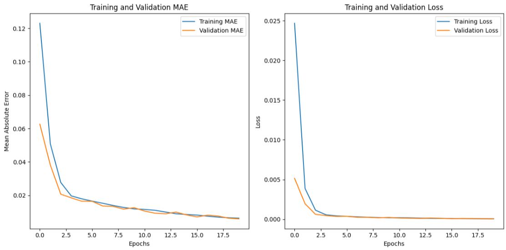

Recurrent Neural Networks (RNNs)
Introduction to Recurrent Neural Networks
Recurrent Neural Networks (RNNs) are a class of neural networks designed to process sequential data, making them particularly suitable for tasks where the order of input matters, such as time series prediction, natural language processing, and speech recognition. Unlike traditional feedforward neural networks, RNNs have loops that enable them to maintain a memory of previous inputs, allowing information to persist and influence future computations.
Basic Structure of RNNs
- Input Layer: Sequential data is fed into the network, where each time step is treated as a separate input.
- Hidden Layer: The core of the RNN contains recurrent connections, which allow the network to maintain a hidden state that captures information about previous time steps.
- Output Layer: Produces predictions or outputs based on the current input and the hidden state.
- Weights Sharing: The same set of weights is used across all time steps, enabling the network to generalize well over sequences of varying lengths.
Working Mechanism of RNNs
1. Sequential Input Processing
- Data is fed into the network one time step at a time, allowing the model to process sequences of arbitrary length.
- At each time step, the input is combined with the hidden state from the previous time step.
2. Hidden State Update
- The hidden state is updated using a non-linear activation function, typically tanh or ReLU.
- This hidden state acts as the network's memory, storing information about the sequence so far.
3. Output Generation
- The updated hidden state is used to compute the output at each time step.
- For many-to-one tasks, the output is generated only after processing the entire sequence.
- For many-to-many tasks, an output is generated at each time step.
4. Backpropagation Through Time (BPTT)
- To train the network, gradients are computed over the entire sequence using BPTT.
- This involves unrolling the network over time and calculating gradients for each time step.
Applications of RNNs
- Natural Language Processing (NLP): Used for tasks like sentiment analysis, machine translation, and text generation.
- Speech Recognition: Converts spoken language into text by processing audio signals as sequences.
- Time Series Prediction: Predicts future values based on historical data in domains like finance and weather forecasting.
- Video Analysis: Processes sequences of frames to perform tasks like action recognition.
- Music Generation: Learns patterns in musical sequences to generate new compositions.
Advantages of RNNs
- Sequence Handling: RNNs are inherently designed to process sequential data, making them ideal for tasks like time series and language modeling.
- Parameter Sharing: Recurrent connections reduce the number of parameters, enabling efficient learning over sequences.
- Memory of Context: The hidden state allows the network to retain information about past inputs, providing context for future predictions.
- Flexibility: RNNs can handle sequences of varying lengths, making them versatile across different applications.
Limitations of RNNs
- Vanishing Gradient Problem: During training, gradients can become very small, leading to difficulty in learning long-term dependencies.
- Exploding Gradient Problem: Conversely, gradients can become excessively large, causing instability during training.
- Limited Long-Term Memory: Standard RNNs struggle to capture dependencies over long sequences, requiring advanced architectures like LSTMs or GRUs.
- High Computational Cost: Sequential processing and backpropagation through time make RNNs computationally expensive.
- Difficulty in Parallelization: Unlike feedforward networks, RNNs process one step at a time, limiting their scalability.
Variants of RNNs
- Long Short-Term Memory (LSTM): Overcomes the vanishing gradient problem using gates to control information flow, enabling better handling of long-term dependencies.
- Gated Recurrent Unit (GRU): A simplified version of LSTM with fewer parameters, achieving similar performance in many tasks.
- Bidirectional RNNs: Processes sequences in both forward and backward directions to capture context from both ends.
- Attention Mechanism: Enhances RNNs by allowing the model to focus on specific parts of the input sequence, widely used in transformer models.
Sample Code Example
RNN in Action: Predicting Sequential Data with TensorFlow
# Import required libraries
import numpy as np
import matplotlib.pyplot as plt
from tensorflow.keras.models import Sequential
from tensorflow.keras.layers import SimpleRNN, Dense
from sklearn.model_selection import train_test_split
# Generate synthetic sequential data (sin wave)
def generate_data(samples=1000, timesteps=10):
x = np.linspace(0, 100, samples)
y = np.sin(x)
data = []
labels = []
for i in range(len(y) - timesteps):
data.append(y[i:i+timesteps])
labels.append(y[i+timesteps])
return np.array(data), np.array(labels)
# Prepare the dataset
timesteps = 10
data, labels = generate_data()
data = data.reshape(-1, timesteps, 1) # Reshape for RNN input
labels = labels.reshape(-1, 1)
# Split the data into training and testing sets
x_train, x_test, y_train, y_test = train_test_split(data, labels, test_size=0.2, random_state=42)
# Build the RNN model
model = Sequential()
model.add(SimpleRNN(32, activation='tanh', input_shape=(timesteps, 1)))
model.add(Dense(1)) # Single output for regression
# Compile the model
model.compile(optimizer='adam', loss='mse', metrics=['mae'])
# Train the model and save history for visualization
history = model.fit(x_train, y_train, epochs=20, batch_size=32, validation_data=(x_test, y_test))
# Evaluate the model
test_loss, test_mae = model.evaluate(x_test, y_test, verbose=2)
print(f"Test Mean Absolute Error: {test_mae:.4f}")
# Visualize the training progress (MAE and Loss)
plt.figure(figsize=(12, 6))
# MAE plot
plt.subplot(1, 2, 1)
plt.plot(history.history['mae'], label='Training MAE')
plt.plot(history.history['val_mae'], label='Validation MAE')
plt.title('Training and Validation MAE')
plt.xlabel('Epochs')
plt.ylabel('Mean Absolute Error')
plt.legend()
# Loss plot
plt.subplot(1, 2, 2)
plt.plot(history.history['loss'], label='Training Loss')
plt.plot(history.history['val_loss'], label='Validation Loss')
plt.title('Training and Validation Loss')
plt.xlabel('Epochs')
plt.ylabel('Loss')
plt.legend()
plt.tight_layout()
plt.show()
# Visualize predictions vs actual values
y_pred = model.predict(x_test)
plt.figure(figsize=(10, 5))
plt.plot(range(50), y_test[:50], label="Actual Values")
plt.plot(range(50), y_pred[:50], label="Predicted Values")
plt.title("RNN Predictions vs Actual Values")
plt.xlabel("Sample Index")
plt.ylabel("Value")
plt.legend()
plt.show()
Output:
